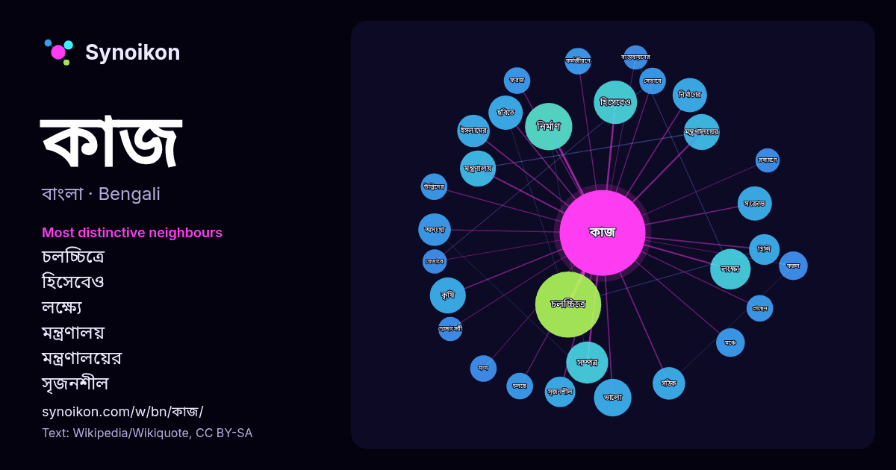

বাংলা · জনপ্রিয় শব্দ
কাজ
“work” · উইকিপিডিয়া, Wikiquote থেকে 1144টি প্রয়োগে এর চারপাশে পাওয়া শব্দ।

সবচেয়ে স্বতন্ত্র প্রতিবেশী
- চলচ্চিত্রে 11×
- হিসেবেও 11×
- লক্ষ্যে 8.8×
- মন্ত্রণালয় 8.7×
- মন্ত্রণালয়ের 8.6×
- সৃজনশীল 7.9×
- ফরজ 6.8×
- করুন 6.8×
- কৃষি 6.7×
- সেভাবে 6.7×
- ভালো 6.6×
- ইসলামের 6.6×
- সংক্রান্ত 6.4×
- মন্দ 6.3×
- কর্মজীবনে 6.1×
- মঞ্চে 6.1×
- অসংখ্য 6.0×
- নির্মাণের 5.8×
- সম্পন্ন 5.7×
- ছবিতে 5.7×
× = সাধারণ উইকিপিডিয়া টেক্সটের চেয়ে কত গুণ বেশি।
সবচেয়ে ঘন ঘন প্রতিবেশী
- চলচ্চিত্রে 37
- প্রধান 37
- একজন 27
- শেষ 25
- সময় 22
- সালের 20
- নির্মাণ 19
- হিসেবেও 16
- মূল 15
- সম্পন্ন 15
- লক্ষ্যে 14
- চরিত্রে 12
- দ্য 12
- ধরনের 12
- পাশাপাশি 12
- বাংলা 12
- ভারতের 12
- ভালো 12
- মানুষের 12
- সবচেয়ে 12
প্রসঙ্গে
- কাজ দ্বারা বুঝানো হতে পারে : কাজ (মানব কর্মকাণ্ড), সৃষ্টিকর্ম বা সৃজনশীল কর্মকাণ্ড। কাজ (পদার্থবিজ্ঞান), কোনো কিছু করা। উইকিঅভিধানে কাজ শব্দটি খুঁজুন। Wikipedia snippets · কাজ (দ্ব্যর্থতা নিরসন)
- কাজ মসজিদ ইরানের এসফাহান প্রদেশের একটি ঐতিহাসিক মসজিদ। মসজিদটি জাফান্দেহ রুদের উত্তর তীরে ইসফাহান থেকে ২৪ কিমি পূর্বে অবস্থিত। বর্তমানে মসজিদটিতে শুধু Wikipedia snippets · কাজ মসজিদ
- করে বা খোদাই করে কোন কিছু তৈরি করার প্রক্রিয়াকে কাঠের কাজ বা দারু শিল্প বলা হয় । যারা কাঠের কাজ করে তাদের বলা হয় ছুঁতার বা কাঠ মিস্ত্রি। মানব সভ্যতার Wikipedia snippets · কাঠের কাজ
- করতে প্রদান করে কাজ সৃষ্টি করতে এবং এগুলোর কপি বিক্রি করতে, একই সাথে অধিকার প্রদান করে ব্যুৎপত্তি সম্পন্ন কাজ করেতে, এবং প্রকাশ্যে তাদের কাজ প্রদর্শন করতে Wikipedia snippets · মার্কিন যুক্তরাষ্ট্রের কপিরাইট আইন
- শ্বসন অঙ্গের কাজ করে। ম্যালপিজিয়ান নালিকা (malpighian tubule), সবুজ গ্রন্থি (green gland), কক্সাল গ্রন্থি (coxal gland) ইত্যাদি রেচন অঙ্গের কাজ করে। স্নায়ুতন্ত্র Wikipedia snippets · সন্ধিপদী
- থাকলে, প্রকাশককে শুধু ডিওআই নম্বরের মেটাডেটা থেকে ইউআরএলটি হালনাগাদ করলেই কাজ হয়ে যায়। ইউআরএল-এর মতো ডিওআই ব্যবস্থা সবার জন্য উন্মুক্ত নয়। ডিওআই সংগঠনের Wikipedia snippets · ডিজিটাল অবজেক্ট আইডেন্টিফায়ার
- প্রচার এবং প্রসারের লক্ষ্যে সমগ্র বাংলাদেশ জুড়ে বিভিন্ন প্রতিষ্ঠানের সাথে কাজ করে। উইকিমিডিয়া ফাউন্ডেশন মার্কিন যুক্তরাষ্ট্রভিত্তিক একটি অলাভজনক প্রতিষ্ঠান Wikipedia snippets · উইকিমিডিয়া বাংলাদেশ
- অর্থোডক্স তিওয়াহেদো চার্চ এবং ইরিত্রিয়ান অর্থোডক্স গির্জা) সম্পর্কিত হিসাবে কাজ করে। ইথিওপীয় ক্যালেন্ডারটি একটি সৌর ক্যালেন্ডার যার আলেকজান্দ্রিয়া এবং Wikipedia snippets · ইথিওপীয় বর্ষপঞ্জি
আরও শব্দ
- অরণ্য
- আয়না
- ইতিহাস
- ঈশ্বর
- কুকুর
- ক্ষমতা
- খাদ্য
- গান
- গ্রীষ্ম
- ঘড়ি
- ঘণ্টা
- ঘোড়া
- ছায়া
- জননী
- জলবায়ু
- জীবন
- ঝড়
- টাকা
- ট্রেন
- দারুচিনি
- দ্বীপ
- নক্ষত্র
- নীরবতা
- পরিবার
- পানি
- পাহাড়
- প্রকৃতি
- বাগান
- বিজ্ঞান
- বিড়াল
- বৃষ্টি
- ভাষা
- মধু
- মরুভূমি
- মানচিত্র
- মৃত্যু
- রাস্তা
- রুটি
- লবণ
- শরৎ
- শহর
- শিল্প
- শীত
- সত্য
- সময়
- সেতু
- সোনা
- স্বাস্থ্য
- হৃদয়
2026-10-09 তারিখে ডিফল্ট সেটিংসে (±5 শব্দ, মাঝারি কর্পাস) আগে থেকে গণনা করা। ইন্টারঅ্যাক্টিভ মানচিত্র লাইভ ডেটা দিয়ে এটি হালনাগাদ করতে পারে।
যন্ত্রে অনূদিত ইন্টারফেস; সংশোধন স্বাগত।